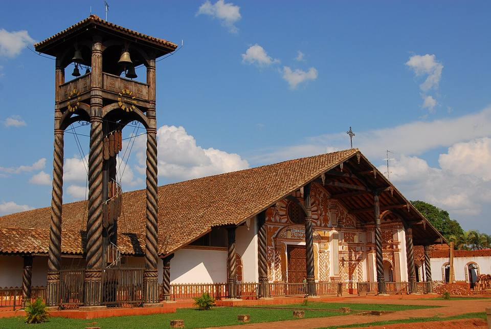
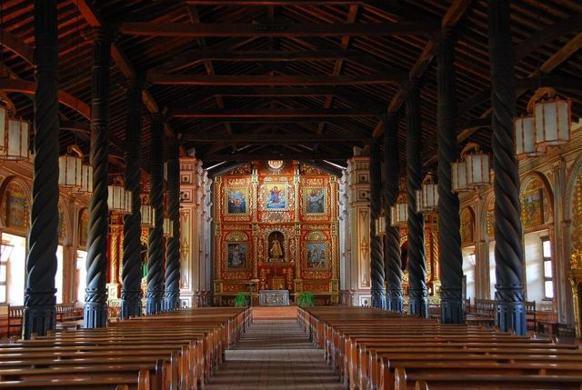
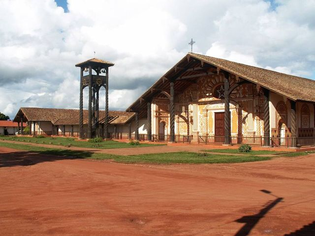
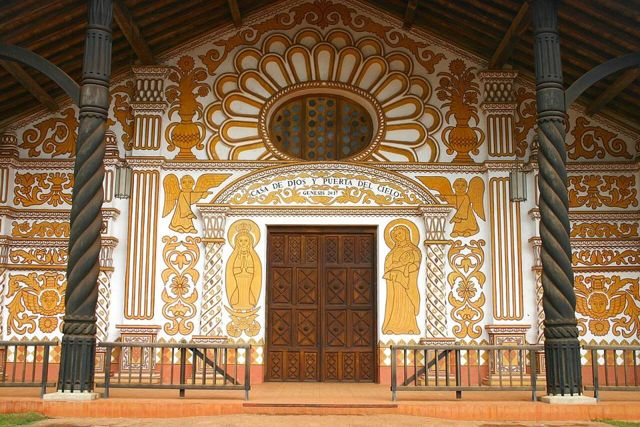
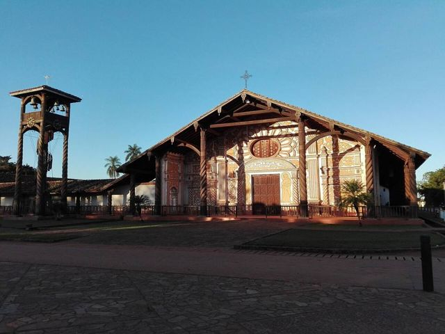
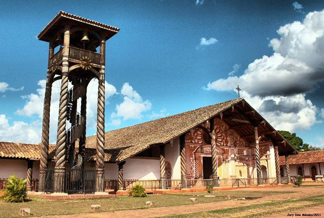
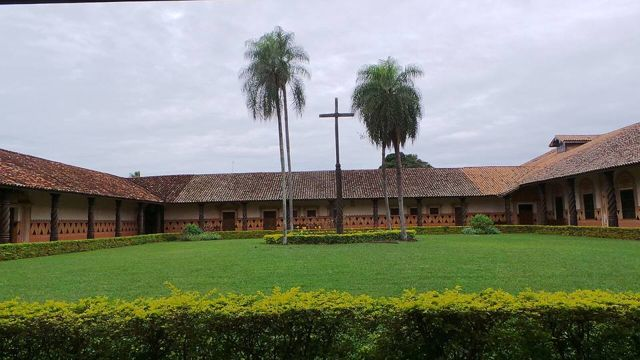

Missions: Concepción
Santa Cruz Department · Culture and history

Concepción probably has the most beautiful church of all the missions, with its painted façade and carved wooden columns. The village lives to the rhythm of baroque music, still played by young people from the region, and hosts a renowned festival.
500 maltitude
1 dayto spend there
Things to do
- Cathedral and arcaded square
- Mission museum
- Baroque music concerts (international festival in even-numbered years, in April)
What to eat
- Locro de gallinaA thick rice soup with free-range chicken, comforting and typical of the east.
- Cuñapé and pan de arrozLittle cheese breads made with cassava or rice flour, served warm with coffee in the morning.
- MasacoMashed plantain or cassava with charque or cheese. Rich and filling.
Tip. A good place to spend the night on the circuit.
Also here
- UNESCO Jesuit Missions of the Chiquitos
- Festivals Missions baroque music festivalFor ten days, over a hundred concerts of baroque and Renaissance music in the mission churches and in Santa Cruz, often free.
- Myths and legends The JichiIn the eastern lowlands, the Jichi is the guardian spirit of water, often a snake or a jaguar. It is said that if it isn't respected, wells and lagoons dry up.
How to get to Concepción
San Javier Road (bus, car) · 1 h 30
Missions circuit bus.
San Ignacio Road (bus, car) · 3 to 5 h
Daily buses.
Photos of Missions: Concepción












More places in this region
 Missions: San JavierThe first of the Jesuit missions of Chiquitos (UNESCO), with painted wooden churches.
Missions: San JavierThe first of the Jesuit missions of Chiquitos (UNESCO), with painted wooden churches. Missions: San Ignacio de VelascoThe hub of the missions circuit, with its lagoon.
Missions: San Ignacio de VelascoThe hub of the missions circuit, with its lagoon. Missions: San Miguel de VelascoA Chiquitano mission with woodcarving workshops that are still very much alive.
Missions: San Miguel de VelascoA Chiquitano mission with woodcarving workshops that are still very much alive. Missions: Santa Ana de VelascoThe most authentic of the Chiquitos missions, with its original organ.
Missions: Santa Ana de VelascoThe most authentic of the Chiquitos missions, with its original organ. Missions: San Rafael de VelascoA mission church decorated with mica and painted wood, between San Ignacio and San José.
Missions: San Rafael de VelascoA mission church decorated with mica and painted wood, between San Ignacio and San José. Missions: San José de ChiquitosThe only stone Jesuit mission, at the foot of the hills.
Missions: San José de ChiquitosThe only stone Jesuit mission, at the foot of the hills. Noel Kempff Mercado National ParkA vast and very remote UNESCO park: the Huanchaca plateau and the Arco Iris falls.
Noel Kempff Mercado National ParkA vast and very remote UNESCO park: the Huanchaca plateau and the Arco Iris falls.